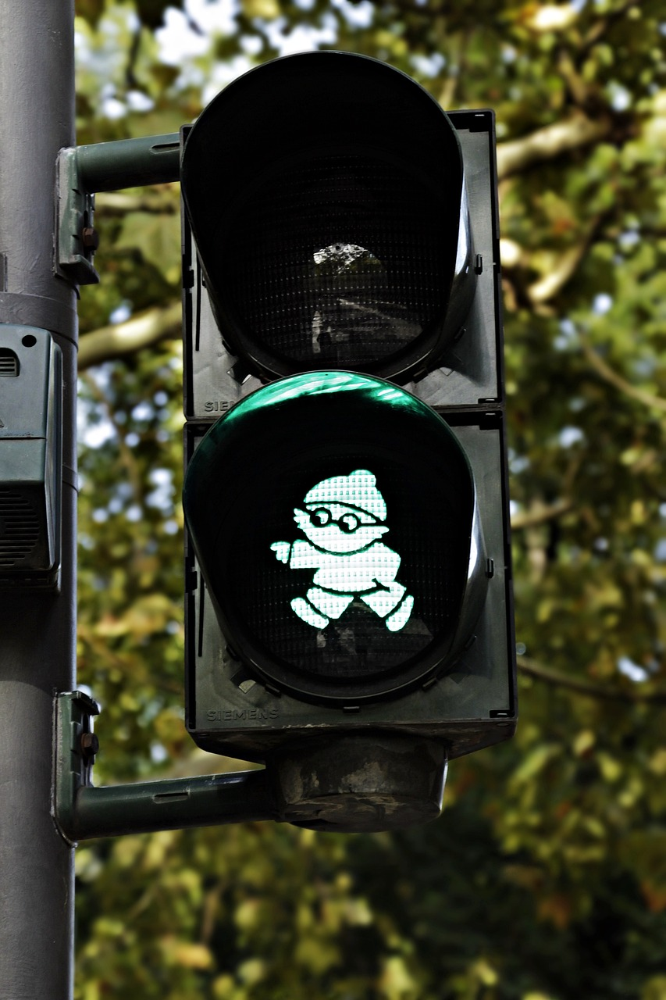
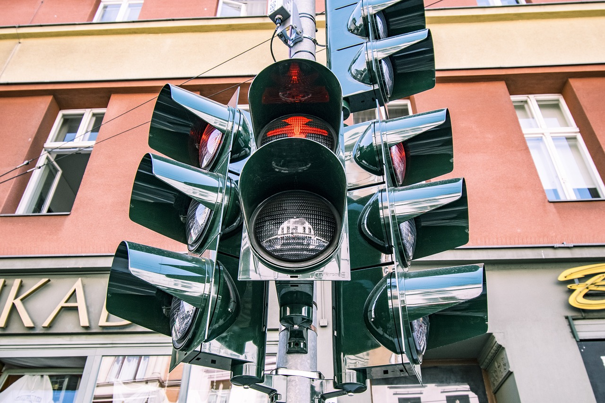
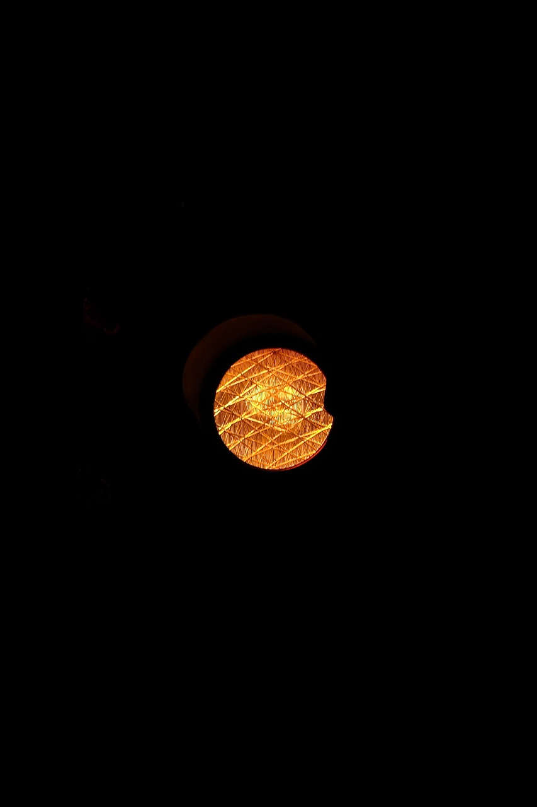
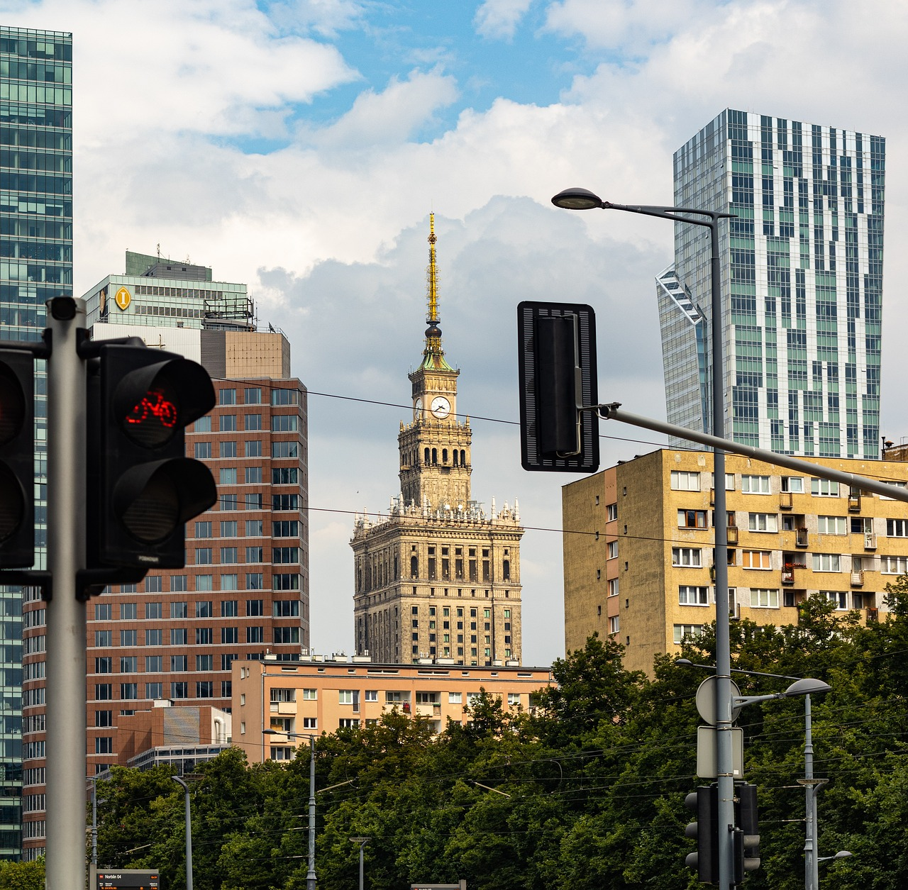
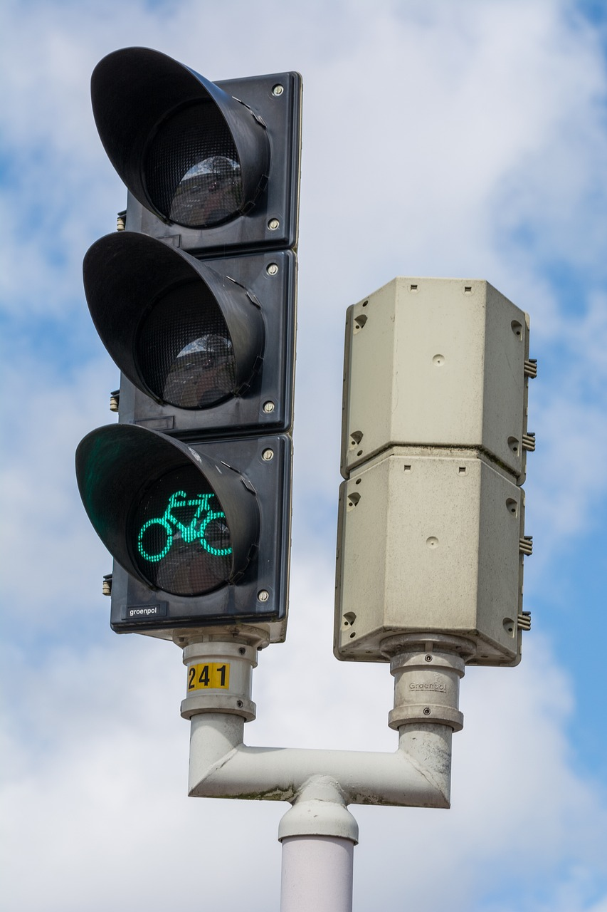
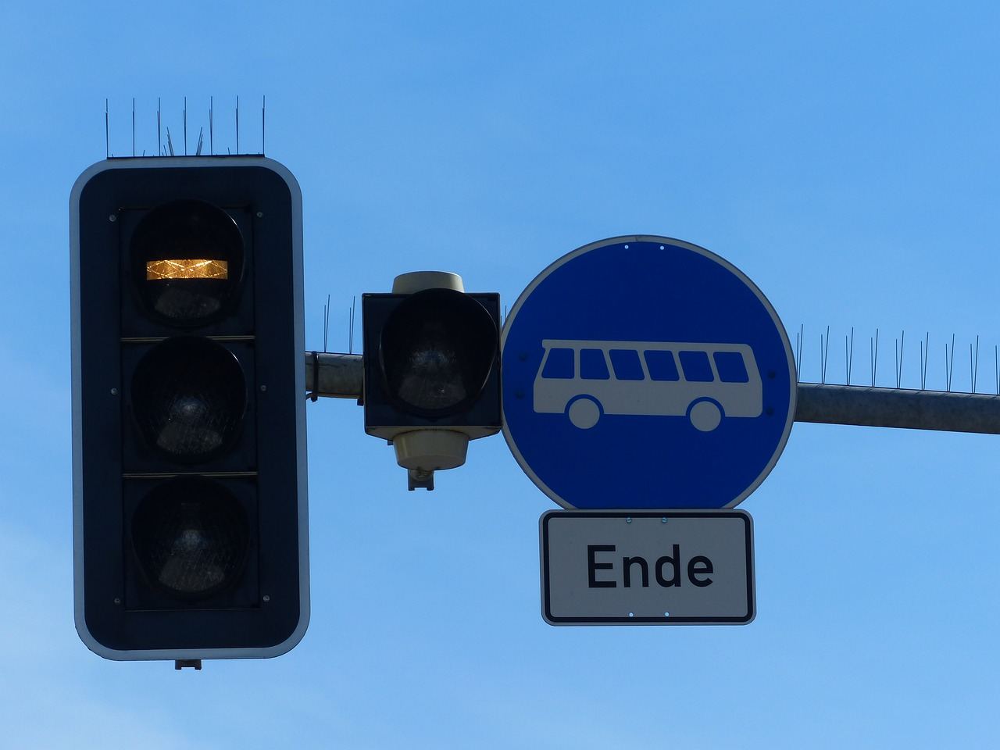

INVESTIGACIÓN
¿Cuáles son los tipos de semáfororos?
- Semáforo peatonal.
- Semáforos para vehículos con luz roja.
- Semáforos para vehículos con luz amarilla.
- Semáforos para vehículos con luz verde.
- Semáforos cuadrados para vehículos.
- Semáforos para bicicletas.
- Semáforos para autobuses y tranvías.
1.El semáforo peatonal.
Como en el caso de los semáforos de peatones la luz verde indica vía libre para el viajero, la luz roja indica que deben detenerse, y la luz amarilla significa precaución, ya que próximamente se cambiará a rojo.
Estos semáforos tienen sensores que se encargan de detectar los flujos de tránsito, estos envían señales de manera remota a los semáforos para controlar la duración d elos tiempos de cada luz, evitando la congestión e aliviando así el transito lo más posible.
2. El semáforo para vehículos con luz roja.
Una luz roja no intermitente prohíbe el paso. Mientras permanece encendida, los vehículos no deben rebasar el semáforo ni, si existe, la línea de detención anterior más próxima a aquél.
3. Funcionamiento de la luz amarilla para vehículos
Una luz amarilla no intermitente significa que los vehículos deben detenerse en las mismas condiciones que si se tratara de una luz roja fija, a no ser que, cuando se encienda, el vehículo se encuentre tan cerca del lugar de detención que no pueda detenerse antes del semáforo en condiciones de seguridad suficientes.
4. Funcionamiento de semáforos para vehículos con luz verde
En el caso de que la luz sea verde no intermitente, simboliza que está permitido el paso del tráfico rodado. Si se trata de una flecha de este color sobre un fondo negro, significa que los vehículos pueden circular en el sentido que indica la misma.

5. Funcionamiento de semáforos cuadrados para vehículos
Luz verde en forma de flecha apuntando hacia abajo: permite circular por el carril en la que está encendida y no exime de la obligación de detenerse ante una luz roja circular o de obedecer cualquier otra señal que obligue a detenerse o a ceder el paso.
6. Funcionamiento de semáforos para bicicletas
Siempre que en un semáforo aparezca la silueta iluminada de un ciclo, como en el caso de la imagen, ello determinará que sus indicaciones se dirigen únicamente a ciclos, bicicletas y ciclomotores. Así pues, el resto de vehículos o peatones, no deberán atender a dichas indicaciones.
7.Funcionamiento de semáforos para tranvías y autobuses
Línea horizontal: prohibido el paso. Línea vertical: permite el paso de frente. Línea oblicua hacia la izquierda o derecha: permite el paso a izquierda o derecha. Línea oblicua intermitente: los vehículos que hemos mencionado deben detenerse como si se tratara de una luz amarilla fija.
